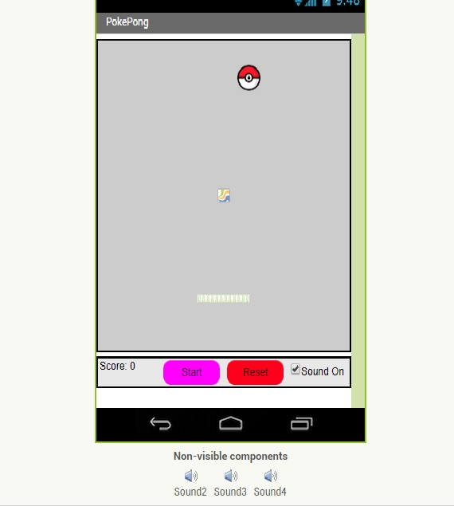

Conclusion Questions
This is my 1st Scracth project, Tera v.s. Gobo: the ultimate showdown. Click the image to play!

This is my MIT App Inventor android mobile game, PokePong! Use the slider to bounce the pokeball back against the walls. If the ball gets past your slider, then you lose. Scan the QR code to play...
This is my interactive fiction made with python. It follows the life of a teenager named Alex, who is faced by numerous decisions that will ultimately determine how his life ends up. Choose the right path and you will end the story as a millionaire. Click the image to play!

This is my python game that I made in Canopy. We based our creation off the popular game, Mab Libs. The player will have a chose between two stories, either option 1 or option 2. After they decide which one they want to play, the user enter the command, 1 or 2, and then is taken to the game. The program will ask the user to answer a series of demmands. These demands include statements like "Enter a plural noun" or "Enter a company name". After the player answers all of the questions, their responses are inputed into a short story that the person and read and enjoy.